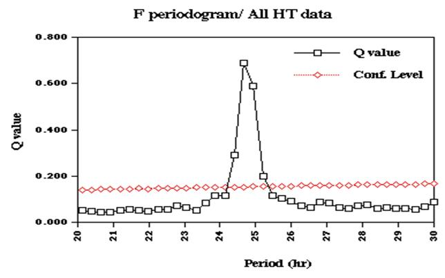

Periodic Analysis of the Viking Lander Labeled Release Experiment
Joseph D. Miller*a, Patricia A. Straat**b, and Gilbert V. Levin***c
aDept. of Cell and Neurobiology, Keck School of Medicine at USC; b (ret); cSpherix Inc.
ABSTRACT
Did Viking Lander biology
experiments detect life on Mars? The strongest evidence for biology resulted
from the Labeled Release (LR) experiment1. A radiolabeled (14C)
nutrient solution was added to a Martian soil sample and the subsequent
evolution of radioactive gas was observed.
Flight data showed an initial release of labeled gas followed by strong
periodic fluctuations in the amount of
gas in the headspace above the soil, superimposed on a slow rise in
release. Current analyses show, at
steady state, these fluctuations exhibit a periodicity of 24.66+/-0.27 hr,
statistically indistinguishable from the Martian solar period. The gas
fluctuation appears synchronized to a mean 2º C periodic fluctuation in
internal temperature in the experimental chamber, which in turn is synchronous
with almost 50º C daily fluctuations in ambient Mars surface temperature.
Calculations based on LR data indicate that the daily gas fluctuation amplitude
could be in part accounted for by change in temperature-dependent soil
solubility of CO2, but total amount of gas accumulated cannot be
accounted for in this way. Recent observations of circadian rhythmicity in
microorganisms and entrainment of terrestrial circadian rhythms by low
amplitude temperature cycles argue that a Martian circadian rhythm in the LR
experiment may constitute a biosignature.
Keywords: circadian rhythm, Labeled Release experiment, life on Mars, phase shift, Viking mission
1. INTRODUCTION
The possibility of life on Mars has excited human imagination since well before the time of Percival Lowell and has been depicted in countless works of imagination by such authors as H. G. Wells, Edgar Rice Burroughs, and Ray Bradbury. But an empirical test of this possibility had to await the Viking mission to Mars in 1976. In this mission three independent experiments were designed to detect putative Martian microbes. One, the Labeled Release (LR) experiment1, gave results that satisfied pre-mission criteria agreed upon for demonstrating the existence of life. However, other interpretations have mired the results in controversy for the last 25 years.
2. METHODS
The LR experiment involved
collection of a sample of Martian soil by a robotic arm. A small portion of the
sample was placed in a sealed test cell and injected with a drop of a 14C-labeled
nutrient medium. The sample was maintained at approximately 10º C. Evolution of
radiolabeled gas (most likely CO2, but possibly CO, or even CH4)
was monitored by a beta detector in a chamber connected to the test cell by a
13” stainless steel tube (i.d.= 0.105”), through which the evolved gas
traveled. A total of nine soil samples was tested, four in the first lander
(VL1) and five in the second lander (VL2), the landers being approximately 4000
miles apart. Positive responses (n=4) were followed by control tests (n=5) on
duplicate soil samples, after heating to “sterilization” temperature or storing
for long periods, to distinguish whether the responses were biological or
chemical.
3. RESULTS
Nutrient incubation with a fresh Martian soil sample generated a large evolution of radiolabeled gas, compared to background. Sterilization of the sample via heating to 160º C prevented this effect. Prior heating to 46º C significantly attenuated the nutrient-induced rise in detected radiolabel. Storage of the sample in the dark at 10-15º C for either three or five months resulted in a 90% loss of signal upon subsequent nutrient injection. Arrhenius analysis indicated that the activation energy of the release process was 35-43 kcal/mole, well within the range of a biological process2. Ground-based simulations3 with Mars soil analogs suggested that the evolved radiolabel may have been CO2, but experiments with peroxides and superoxides4 provided no support for such chemical agents being the cause of the observed response on Mars.
The focus here will be on
one of the nine experiments, the “active” phase (no sterilization) Viking
Lander 2 cycle 3 (VL2c3) experiment.
One aspect of the data that has not been previously subjected to
detailed statistical analysis is the periodic fluctuation in radiolabel
superimposed on a longer term logarithmic increase in signal (VL2c3; Figure 1
upper; expanded in Figure 1 middle, lower). About 40 sols following the second
nutrient injection, the amplitude of the periodic fluctuations diminishes,
eventually dampening out. These data were subjected to classical circadian
analysis.
Cosine spectrum (Figure 2
upper) and F periodogram analysis (Figure 2 lower) indicated that the period of
the fluctuations in radioactive gas (labeled LR in the figures) present in the
detector chamber is precisely 24.66 hr, one Martian sol.
Figure 1
(upper, middle, lower) The upper graph is taken from Levin and Straat, 1977 and
shows labeled release (radioactivity), test cell temperature (HT), detector
temperature, and nutrient injections for VL2c3. The LR data from sol 63 on is
expanded in the middle graph and fit to a log function (white line). The lower
graph expands 30 highly periodic oscillations from sol 63 up to the signal
reduction late in the experiment.
Figure 2
(upper, lower). The upper graph shows that the best fit (highest amplitude of
the fit cosine) to the LR data is a cosine function with a period of 24.66 hr.
The lower graph similarly shows that the best fit (highest Q value) is a
periodic function with period equal to 24.66 hr. 95% confidence intervals for the best fits are indicated in both
graphs.
The average waveform of the
LR signal for the first two months following the second nutrient infusion is
plotted in Figure 3 upper. It is apparent that the average amplitude of the
signal in the first month (Figure 3 middle) is substantially higher than in the
second month (Figure 3 lower), although the period remains 24.66 hr.

Figure 3
(upper, middle, lower) These graphs are mean plots of the circadian waveform
plotted at a period of 24.66hrs for 60 sols from sol63 (LR TOTAL, upper graph)
and for the first 30 sols (LR B1, middle graph) vs. the final 30 sols (LR B2,
lower graph). Note the amplitude decrease in LR between B1 and B2.
A common method of plotting circadian data is the actogram. This graphical presentation plots a periodic variable across circadian time on the x-axis for some number of days on the y-axis. The data are typically plotted at the period of the variable (either 24 hr in the usual light/dark cycle or the intrinsic period under constant conditions, determined from F periodogram analysis). Figure 4 shows the LR data from VL2c3, subsequent to the second nutrient infusion, plotted in this fashion. The data are double-plotted on the x-axis to visualize any shift in phase, which may not be apparent in a single plot. The black bars represent the time periods during which the LR values exceed the daily mean of LR. The circles represent the daily acrophase, the timepoint at which LR reaches its maximal value. Best-fit regression lines are drawn through the acrophases. When free-running, non-entrained rhythms are plotted in this way, the acrophase occurs at the same time each day and the regression lines are perpendicular to the x-axis. The data between first nutrient infusion and second nutrient infusion (diamond symbol) are indicated at the top of the actogram.
Figure 4
Actogram analysis of the VL2c3 data. The y-axis is sols of LR data and the
x-axis is double-plotted at the best-fit period (one Martian sol or 24.66 hrs)
in hrs (see axis across top of figure). Black bars represent those time
intervals when the LR values exceeded the daily mean. The diamond symbol represents the time of nutrient injection. The
circle symbols are the daily acrophases (times of daily maxima in LR).
Regression lines are drawn through the acrophases following the nutrient
injection and for available data before that injection. When actogram data is
plotted at the intrinsic circadian period, acrophase regression lines are
perpendicular to the x-axis. The small daily advance in the acrophase after the
nutrient injection probably reflects the advancing time of sunset in Martian
winter (see text). Note the large difference in acrophase slope before and
after nutrient. This may indicate a phase-shifting effect of nutrient infusion,
similar to food availability resetting of terrestrial circadian rhythms. It is also apparent that the rhythmicity
breaks down late in the experiment, consistent with the reduction in LR
amplitude noted in Figure 3, LR B2.
This plot has several interesting features. First, it is apparent that the LR data are highly periodic, particularly for the first five weeks of data following the second nutrient injection. Secondly, it is apparent that the rhythmicity begins to fragment in the last four weeks of data, consistent with the reduction in mean amplitude seen in the average waveform analysis (Figure 3 upper, middle, lower). Thirdly, the acrophase (maximum) and bathyphase (minimum) values (not shown) precess or phase advance every sol by about 2.5 min. This suggests either that the period of the LR oscillation is not precisely 24.66 hr (i.e., it is free-running at a slightly different period) or that the LR rhythm is entrained to some variable that is advancing every sol. Finally in the six day period between the first and second nutrient injections (top of actogram) the period (25.46 hr) is markedly different from the 24.66 hr period seen in the remainder of the data set. These acrophases are delaying every day instead of advancing, as in the data following second nutrient. The acrophase then advances about two hrs between the last pre-infusion value on November 3 to a new stable value on November 7 (estimated acrophases on November 4 and November 5 are not trustworthy because of a loss of signal throughout much of the time interval November 4 to November 6).
Similar analysis of the head
end assembly (of the test cell) temperature (HT, as measured directly over the
soil sample) indicates that it is also highly periodic with a periodicity of
24.66 hr, exhibiting acrophases and bathyphases that similarly advance by about
2.5 min every day. Temperature measured at the beta detector itself (DT) is
significantly periodic, but much noisier (compare average waveforms in Figure 5
upper, lower and period estimates derived from F periodogram analysis in Figure
6 upper, lower). The daily means of LR were highly predictable from the daily
HT means, with HT accounting for 88% of the variance in LR (e.g., Figure 7
upper-Lissajous ellipses occur when two periodic functions are plotted against
each other). Note that the HT means phase-lead the LR means by as much as two
hours (Figure 7 lower). Virtually every LR acrophase could be predicted from
the HT acrophase, but LR acrophases could not be predicted from DT acrophases.
It should also be noted that LR does not reflect every high frequency deviation in HT, as may be seen from one cycle of data (Figure 8 upper) and from five cycles of data (Figure 8 lower). Clearly, there are uncorrelated sources of noise in both waveforms.
Mars ambient surface
atmospheric temperatures are highly periodic (Figure 9). Daily fluctuations in
ambient temperature are as large as 50º C, compared to the maximum fluctuation
of 4º C observed in HT. The ambient temperatures5 showed no evidence
of the 2.5 min/sol phase advance that was observed in the LR and HT data. However,
the averaging procedure employed to obtain these values may have obscured this
small phase shift. Indeed an analysis of sunset times through the course of
VL2c36 indicated that all but about 18-sec of the LR phase advance
could be accounted for by the daily advance in sunset during the Martian
winter. The residual 18-sec is well within the error variance of the linear
regression through the daily acrophases (Figure 4).
Previous ground-based
experiments3 have strongly suggested that the gas released in the
Mars LR experiment was CO2.
Simulations with CO2 and sterile Mars analog soils were able
to demonstrate a minor daily fluctuation when temperature was cycled from
7-16ºC. However, these simulation experiments were unable to replicate the
magnitude of the daily LR oscillation correlated with the 2ºC mean daily
temperature fluctuation observed in the flight data.
We reconsidered the hypothesis that temperature-regulated CO2 solubility in Martian soil samples could explain the daily LR oscillations. The pH of the Mars soil-water mixture was calculated from the 30-35% drop in LR following the second injection using the carbon dioxide/water/bicarbonate (CO2/HCO3-/CO32-) equilibrium. This calculation yielded a pH of 8.06, the first experimentally determined value for moistened Martian soil (details will be presented elsewhere). Using this pH, equilibrium calculations indicated that at best the daily temperature fluctuation could account for 55-78% of the LR oscillation. Thus, the amplitude of the daily rhythm (maximum minus minimum) as well as the precipitous drop in signal after 2nd injection3 could be substantially explainable in terms of physical chemistry. However, not as easily explained are: 1) the 2 hour phase delay relative to temperature oscillation 2) the failure of the LR signal to follow slavishly the HT waveform (Figure 8) 3) substantial decrease in the daily LR fluctuations in the 160º C “sterilization” 4) absence of the continual slow rise in LR signal (as inVL2c3) in the “sterilization” cycle. All of these four phenomena (as well as the large increase in LR after 1st injection and the continuing slow rise in VL2c3) can be accommodated by a biological explanation.
4. CONCLUSIONS
The existence of a circadian rhythm (or, more properly a circasolar rhythm) is a presumptive biosignature. All terrestrial lifeforms examined to date exhibit circadian rhythmicity, from primates to blue-green algae. In fact, circadian rhythmicity in blue-green algae7 is superimposed on a growth curve analogous to the apparent growth function observed by Levin and Straat1. Levin and Straat concluded, on the basis of the “active” LR response following first nutrient injection, compared to the large attenuation in LR response to nutrient injection caused by pre-nutrient “sterilization” at 160º C, as well as the smaller attenuation in response associated with pre-nutrient soil sample heating to a lower temperature (“partial sterilization”), that the LR response following first nutrient injection was consistent with biological origin. Further study of these data and other relevant findings led Levin8 to conclude that the LR experiment had detected living microorganisms in the soil of Mars. In contrast, the focus of this report is on the LR data following second nutrient injection. The logarithmic
Figure 5 (upper, lower). The
upper graph is the mean plot, averaged at 24.66 hr, of the total HT data; the
lower graph is the corresponding plot for DT. Vertical bars are standard
deviations. Note the small amplitude and large variance of the DT data relative
to the HT data.

Figure 6
(upper, lower). These graphs are plots of the dominant periodicity in the HT
measure (upper) and DT measure (lower).
95% confidence intervals are indicated in each plot. In spite of the
great variance in DT, there is considerable power (Q value) at 24.66 hr.
Figure 7 (upper, lower). The
upper graph plots the periodic HT function vs. the periodic LR function,
yielding a Lissajous plot. The width of the data ellipse is a measure of the
phase difference in the variables. Almost 90% of the variance in LR may be
accounted for by variation in HT. The lower plot graphs both variables against
the Martian sol. Since both rhythms
appeaentrained to external ambient temperature, which in turn reflects the
Martian light/dark cycle, this axis is most appropriately labeled zeitgeber
time (ZT) where ZT0 is approximately sunrise.
Note that HT is advanced by about two hrs relative to LR at most
ZT.
Figure 8 (upper, lower). The
upper plot graphs one sol of LR data vs. the HT temperature. The lower plot
graphs five sols of the same data. Note the uncorrelated high frequency
variance in both LR and HT.
Figure 9 Plot of ambient Mars
wind temperatures (°K). The Mars ambient temperatures are highly periodic, with high
temperatures in day and low temperatures at night. The X symbol marks the mission time at which atmospheric opacity
greatly increased (possible dust storm) and the amplitude of the Martian daily
temperature cycle decreased correspondingly. This corresponded to the decrease
in LR amplitude noted in the last weeks of the VL2cycle 3 data set.
function fit to these data is a mathematical construct; it does not imply any particular biological measure of growth, cell division or metabolism. One speculation is that the function represents metabolism during a period of slow growth or cell division to an asymptotic level of cellular confluence, perhaps similar to terrestrial biofilms in the steady state. Furthermore, the independent periodic component in the LR data may indicate a circasolar rhythm in a putative Martian microorganism, similar to the circadian rhythm previously observed in terrestrial cyanobacteria7. This rhythmicity has been observed in all the “active” LR cycles analyzed so far by the techniques of this paper. In the soil sample that was sterilized at 160º C, there was a residual (and significant) fluctuation (~50 cpm) approximately twice the radioactivity remaining after the purge from the preceding cycle. This fluctuation is marginally periodic but is attenuated by 91.5% compared to the active cycle. In the active cycle of VL2c3, a robust rhythmicity persists for as long as nine weeks. Such persistence is difficult to explain in terms of, for instance, a superoxide chemical reaction9 since such superoxides are immediately destroyed in aqueous media such as the nutrient solution employed in the LR experiments.
The periodic oscillation in
LR observed here is highly correlated with a periodic oscillation in HT. A
temperature-regulated change in CO2 solubility could at least
partially account for the amplitude of the LR oscillation. However, the HT oscillation phase leads the
LR oscillation by as much as two hours, an unusual circumstance if this were
simply a chemical oscillation driven by thermal fluctuation. (Admittedly there
is uncertainty concerning the delay between change in temperature at the head
end assembly, perhaps one inch over the 0.5 cc soil sample, and soil sample
temperature per se. However, a two-hour lag seems quite long for what is
presumably a convective and radiative process. Similarly, thermal-induced
movement of gas between the soil sample and the beta detector requires only
about 20 minutes.) Furthermore, the LR oscillation does not slavishly follow
the thermal variation; rather, it seems that the LR rhythm is extracted from
the HT oscillation, while high frequency noise is not. This is very common in
terrestrial organisms in which a low frequency periodic stimulus (i.e., a
zeitgeber) such as a 12:12 light/dark cycle can entrain a circadian rhythm,
while high frequency transients in the same stimulus are ignored (e.g., turning
on the light in the bathroom at night for a minute or two does not alter normal
entrainment to the light/dark cycle). Furthermore, there is abundant evidence
that as little as a 2º C temperature cycle can entrain circadian rhythms in
terrestrial organisms such as lizards, fruit flies, and bread molds10-13
and entrainment can be preferential to the diminution phase of the temperature
cycle12, in analogy to the temperature fall that occurs at sunset on
Mars).
We believe that the Martian
light/dark cycle and its associated ambient temperature cycle drives the rhythm
in HT observed here, probably because of less than total shielding of the LR
experiment from ambient temperature fluctuations on the surface. Internal
heaters in the head end assembly prevented the temperature from falling to
anything like Mars ambient at night, but internal temperatures were not quite
constant, probably because of thermostat hysteresis. Thus a periodic
oscillation in HT (but not DT) could have synchronized or entrained the LR
rhythm. This interpretation gains considerable support from the analysis
showing that the daily phase advance in LR and HT is entirely accountable for
in terms of the daily advance in sunset on Mars.
What would be the “smoking
gun” from a circadian biology perspective for the existence of life on Mars?
Probably the strongest evidence would come from the observation of a
free-running circadian rhythm with a period significantly different from a
Martian sol. Endogenous rhythms of this kind are present in all terrestrial
organisms observed under constant conditions. However, the temperature
oscillations in HT may have precluded such observations in the current data.
Nonetheless, for about a week between the first and second nutrient infusion,
there is some indication of a free-running rhythm with a period of 25.46 hr.
The second nutrient infusion appears to phase shift and entrain this rhythm to
the HT rhythm of 24.66 hr. Such an interpretation suggests that nutrient
infusion itself is a potent zeitgeber and such zeitgebers are known to alter
the period and phase of terrestrial rhythms. However, the amount of data
between first and second nutrient injections is rather small. Continuing
analysis of the Viking Lander data will target possible occurrence of non-sol
periodicity and large phase shifts that might be expected resulting from the
action of a potent phase-shifting stimulus on a biological rhythm. A NASA-sponsored forthcoming publication14
of the complete Viking LR Mars data will support such inquiries by other
interested scientists and us.
ACKNOWLEDGEMENTS
We are indebted to Ed
Weiler, NASA Headquarters; Joseph King and David Williams, NASA/NSSDC, for
making NASA LR records available to fill gaps in our data files; and to
Yongming Lu, Spherix, for the CO2 equilibria calculations.
REFERENCES
1. G. V.
Levin, and P. A. Straat, “Recent results from the Viking labeled release
experiment on Mars,” J. Geophys. Res.
82, pp.4663-4667, 1977.
2. G. V.
Levin, and P. A. Straat, “Completion of the Viking labeled release experiment
on Mars,” J. Mol. Evol. 14, pp.167-183, 1979a.
3. G. V. Levin, and P. A. Straat, “Laboratory
simulations of the Viking labeled release experiment: kinetics following second
nutrient injection and the nature of the gaseous end product,” J. Mol. Evol. 14, pp. 167-183, 1979b.
4. G. V. Levin and P. A. Straat, "A
search for a nonbiological explanation of the Viking labeled release life
detection experiment," Icarus, 45, pp.
494-516, 1981.
5. S. W. Lee, “Viking Lander meteorology and
atmospheric opacity data set archive,“ 1995, http://atmos.nmsu.edu/PDS/data/vl_1001/,
1997.
6. R. Schmunk, “NASA Goddard Institute for
Space Studies, datasets and images, Time on Mars,” www.giss.nasa.gov/data/mars/time,
2001.
7. T. Kondo, T. Mori, N. V. Lebedeva, S. Aoki,
M. Ishiura, and S. S. Golden, “Circadian rhythms in rapidly dividing
cyanobacteria,” Science 275, pp.224-227, 1997.
8. G. V. Levin, "The Viking Labeled Release Experiment and Life on Mars" in Instruments, Methods, and Missions for the Investigation of Extraterrestrial Microorganisms, Richard B. Hoover, editor, Proceedings of SPIE, 3111, pp.146-161, 1997.
9. A. S. Yen, S. S. Kim, M. H. Hecht, M. S.
Frant, and B. Murray, “Evidence that the reactivity of the martian soil is due
to superoxide ions,” Science 289, pp.1909-1912, 2000.
10. K. Hoffmann, ”On the influence of strength of
zeitgeber on phase in synchronized circadian periodicities,” Z. vergl. Physiologie 62, pp.93-110, 1969.
11. C. D. Francis, and M. L. Sargent, “Effects of
temperature perturbations on circadian conidiation in Neurospora,” Plant Physiol.
64, pp.1000-1004, 1979.
12. D. A. Wheeler, M. J. Hamblen-Coyle, M. S.
Dushay, and J. C. Hall, “Behavior in light-dark cycles of Drosophila mutants that are arrhythmic, blind, or both, “ J. Biol. Rhythms 8, pp. 67-94, 1993.
13. H. Underwood, and M. Calaban, ”Pineal melatonin rhythms in the lizard Anolis carolinensis: I. Response to light and temperature cycles,” J. Biol. Rhythms 2, 179-193, 1987.14. E. Guinness, in preparation, PDS Geosciences Node, Washington University, St. Louis.
jdm@usc.edu; phone
323-442-1629; fax 323-442-3466; Cell and Neurobiology, Keck School of Medicine
at the University of Southern California, 1333 San Pablo St., BMT401, Los
Angeles, CA 90089; **glevin@spherixinc.com; phone 301-419-3900; fax 301-210-4908, Spherix
Incorporated, 12051 Indian Creek Court, Beltsville, MD 20705;
***pstraat@starpower.net; phone 410-442-1582; fax 410-992-8429; 430 Windy
Knoll, Sykesville, MD 21784.